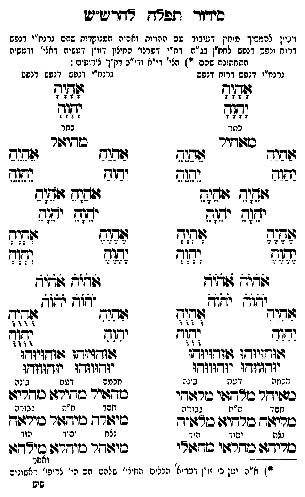

Neue Klartextfassung
[ויכוין להמשיך מוחין דעיבור עם עשרים הויות וחלפי' המנוקדות שהם נרנח"י דנפש דרוח ונפש דנפש למו"ן ב"ן דנפי' דפר' חיצון דזו"ן דעשיה דאצי' ובעשיה התחתונה שהם (*) כל' דז"א וי"ב דק"ך צירופים:] === טבלה === [טור ימין — נרנח"י דנפש דרוח דנפש] [כתר] אָהָיָהָ יָהָוָהָ מאהל [חכמה] אַהַיַהַ יַהַוַהַ מאיהל [דעת] אֹהֵיָהֵ אֹהֵיָהֵ יֹהֵוָהֵ יֹהֵוָהֵ מלהאי [בינה] אֵהֵיֵהֵ יֵהֵוֵהֵ מלאהי [חסד] אֶהֶיֶהֶ יֶהֶוֶהֶ מליאה [ת"ת] אֹהֹיֹהֹ אֹהֹיֹהֹ יֹהֹוֹהֹ יֹהֹוֹהֹ מלהיא [גבורה] אְהְיְהְ יְהְוְהְ מלאיה [נצח] אִהִיִהִ יִהִוִהִ מליהא [יסוד] אוּהוּיוּהוּ אוּהוּיוּהוּ יוּהוּווּהוּ יוּהוּווּהוּ מהלאי [הוד] אֻהֻיֻהֻ יֻהֻוֻהֻ מהאלי [טור שמאל — נרנח"י דנפש דנפש] [כתר] אָהָיָהָ יָהָוָהָ מיהלאל [חכמה] אַהַיַהַ יַהַוַהַ מהאיל [דעת] אֹהֵיָהֵ אֹהֵיָהֵ יֹהֵוָהֵ יֹהֵוָהֵ מהילא [בינה] אֵהֵיֵהֵ יֵהֵוֵהֵ מהליא [חסד] אֶהֶיֶהֶ יֶהֶוֶהֶ מיאלה [ת"ת] אֹהֹיֹהֹ אֹהֹיֹהֹ יֹהֹוֹהֹ יֹהֹוֹהֹ מיהאל [גבורה] אְהְיְהְ יְהְוְהְ מילאה [נצח] אִהִיִהִ יִהִוִהִ מיאהל [יסוד] אוּהוּיוּהוּ אוּהוּיוּהוּ יוּהוּווּהוּ יוּהוּווּהוּ מהיא [הוד] אֻהֻיֻהֻ יֻהֻוֻהֻ מילהא [ומל'] === סוף טבלה === — הג"ה בתחתית העמוד — (*) א"ה יען כי זו"ן דבריאה הכלים החיצו' שלהם הם הו' צירופי' הראשונים שהם בשם אלהים ו' הא' וכעד"ז היצירה שהם א"א ואו"א וזו"ן הכלים החיצו' שלהם הם הו' השלישית ו' הרביעית ו' חמישית ו' ששית ו' שביעית וכעד"ז דעשיה שהם א"א ואו"א וזו"ן הכלים החיצו' שלהם הם כי' ח' ו' ט' וי' י' וי' י"א וי' י"ב [?] הרי ק"ך צירופים כ"י' הי' של י"ח וי' של י"ב צירופים הם בזו"ן דעשיה וכ"ז מבואר בע"ח שמ"ח פ"ה פע"ח ושט"ח בס' ואחר הנטילה תכף יגביה ידיו וכו' כתוב בקולס סי' על הגליון וז"ל ותכף אחר הנט"י עד שלא יחזרו הקלי' להתאחז באותם היוצאים דרך הצפרניים יגביה הידים עד כנגד הראש שיחזרו האורות ליכנס לחב"ד דז"א וגם למטוח חו"ב לנקבה ויחבר שני הזרועות יחד כדי להכניס ב' קשרי הזרועות לפנים וישים שתי כפות ידיו לקבל הפנים ע"כ שהם דברים אלו הם מש' הכוונות דף ח' ע"ג וע"ח של"ח ספ"ב ופע"ח ד"ן ע"ג ועולת התמיד דע"ו ע"ב וכתב בשכ"ט ובס"ס ט"ו [?] וז"ל. גם סדר זה הנז' להגביה ידיו תכף אחר הנט"י הוא לצורך תכף אחר נט"י בלי הפסק בנתיים אבל הפסיק ביניהם קצת גופו לע"ד שאין להגביהם אלא בשעה שמברך ענט"י וכמו' בזוהר שמחמיר בעונש מגביה ידיו בלי ברכה או בלי נטילה ולפ"ז שהגבהת הידים תכף הנטילה היא בהכרח לפעל לתקן ולכוין הנטילם בנט"י הנז' אחר יציאתו מבית הכסא עכ"ל.[?]
Original gegen neue OCR · Niqqud für Vergleich ausgeblendet
Original
[ויכויןK011-001 להמשיך מוחיןK011-002 דעיבור עם עשרים הויות וחלפי'K011-003 המנוקדות שהם נרנח"י דנפש דרוח ונפש דנפש למו"ן ב"ן דנפי' דפר' חיצוןK011-004 דזו"ן דעשיה דאצי' ובעשיה התחתונהK011-005 שהם (*) כל' דז"א וי"בK011-006 דק"ך צירופים:] === טבלה === [טור ימין —K011-007 נרנח"י דנפש דרוח דנפש] [כתר] אהיה יהוה מאהל [חכמה] אהיה יהוה מאיהל [דעת] אהיה אהיה יהוה יהוה מלהאי [בינה] אהיה יהוה מלאהי [חסד] אהיה יהוה מליאה [ת"ת] אהיה אהיה יהוה יהוה מלהיא [גבורה] אהיה יהוה מלאיה [נצח] אהיה יהוה מליהא [יסוד] אוהויוהו אוהויוהו יוהוווהו יוהוווהו מהלאי [הוד] אהיה יהוה מהאלי [טור שמאל —K011-008 נרנח"י דנפש דנפש] [כתר] אהיה יהוה מיהלאל [חכמה] אהיה יהוה מהאיל [דעת] אהיה אהיה יהוה יהוה מהילא [בינה] אהיה יהוה מהליא [חסד] אהיה יהוה מיאלה [ת"ת] אהיה אהיה יהוה יהוה מיהאל [גבורה] אהיה יהוה מילאה [נצח] אהיה יהוה מיאהל [יסוד] אוהויוהו אוהויוהו יוהוווהו יוהוווהו מהיא [הוד] אהיה יהוה מילהא [ומל'] === סוף טבלה === — הג"ה בתחתית העמוד — (*)K011-009 א"ה יעןK011-010 כי זו"ן דבריאהK011-011 הכלים החיצו' שלהם הם הו' צירופי' הראשונים שהם בשם אלהים ו' הא' וכעד"ז היצירה שהם א"א ואו"א וזו"ן הכלים החיצו' שלהם הם הו' השלישית ו' הרביעית ו' חמישית ו' ששית ו' שביעית וכעד"ז דעשיה שהם א"א ואו"א וזו"ן הכלים החיצו' שלהם הם כי' ח' ו' ט' וי' י' וי' י"א וי' י"ב הרי ק"ך צירופים כ"י'K011-012 הי' של י"ח וי' של י"ב צירופים הם בזו"ן דעשיה וכ"ז מבואר בע"ח שמ"ח פ"ה פע"ח ושט"ח בס' ואחר הנטילה תכף יגביה ידיו וכו' כתוב בקולס סי' על הגליון וז"ל ותכף אחר הנט"י עד שלא יחזרו הקלי' להתאחז באותם היוצאים דרך הצפרניים יגביה הידים עד כנגד הראש שיחזרו האורות ליכנס לחב"ד דז"א וגם למטוח חו"ב לנקבה ויחבר שני הזרועות יחד כדי להכניס ב' קשרי הזרועות לפנים וישים שתי כפות ידיו לקבל הפנים ע"כ שהם דברים אלו הם מש' הכוונות דף ח' ע"ג וע"ח של"ח ספ"ב ופע"ח ד"ן ע"ג ועולת התמיד דע"ו ע"ב וכתב בשכ"ט ובס"ס ט"ו וז"ל. גם סדר זה הנז' להגביה ידיו תכף אחר הנט"י הוא לצורך תכף אחר נט"י בלי הפסק בנתיים אבל הפסיק ביניהם קצת גופו לע"ד שאין להגביהם אלא בשעה שמברך ענט"י וכמו' בזוהר שמחמיר בעונש מגביה ידיו בלי ברכה או בלי נטילה ולפ"ז שהגבהת הידים תכף הנטילה היא בהכרח לפעל לתקן ולכוין הנטילם בנט"י הנז' אחר יציאתו מבית הכסא עכ"ל.K011-013
OCR · fehlbar
סידור תפג צחדישיש וינייןK011-001 להמשיך מייזיןK011-002 דעיבור עם ההויוח ואהיהK011-003 המנוקדות שהם נרנח"י דנפש דרוח ונפש דנפש לחח"ן בג"ה דח-י דפרצו' החיציןK011-004 דזו"ן דעשיה דאצי' ודעשי: התחחונהK011-005 שהם ייז הצי' די"א ודי"בK011-006 דק"ך צירופים :K011-007 נרנח"י דנפש דריח דגפשK011-008 נרנח"י דנפש דנפש דנפש לו[זף זש זמ(מ צזזלד כתר כתר כזטודיר כזדידפר 4443 זגגג דיש 46ב ישוב נשגב יבזוזש נפ(ש ודוש ז(שנק וז(ש(ח ז(ח(ש יחנה יש(ש יזזש יד(ש )ז צף ל([לז לז[ זז[: זז זז)) 244 לללאל זזניב צומי חו -דוף זש יצול זריד ד(ד גזהנר לל ידוד ([- יחמד 3 גזדזיזד: ז(וד:יותו ז(ודניודו ג(ו-זיוחו יזדוווד[ז יגדווגךו יוץגווזו יגדווגדו חננז ה דעת בינח חכמה דעת בינה כזפישר כוךגפי כחרעךי סךדגפיר סזדירגד בודריגו חסד ת"ת גבור ה חסד ח"ת גבורה סזריגפד סזרדיט דויד כזיגשרח כזיחשר כירגוך נצת יסוד הו ך נצח יסיך הוד כריח כדר:הי כזדוצי כזיזוחר בזיחרגש אלל 3 -- ---' 3 ואח רזK011-009 א"ה יטןK011-010 כי זו' ובריצ'K011-011 הכלים החיצו' שלהם הם ∅K011-012 הי' צרופי' זזנכ שישK011-013